화학분석기사 (2021-05-15 기출문제)
1과목: 화학분석 과정관리
1. 어떤 화합물이 29.1 wt% Na, 40.5 wt% S, 30.4wt% O를 함유하고 있을 때, 이 화합물의 실험식은? (단, 원자량은 Na: 23.0 amu, S: 32.06 amu, O: 16.0amu이다.)
- Na2SO2
- Na2S2O3
- NaS2O3
- Na2S2O4
(정답률: 77%)

2. 분석실험을 수행하기 앞서 각 실험 목적에 맞는 공인시험방법을 찾고 표준 절차에 맞춰 수행하여야 한다. 다음 중 공인시험방법이 고지되어있는 발행물과 발행처가 잘못 연결된 것은?
- USP - FDA
- 대한민국약전 - 식품의약품안전처
- ISO - 국제표준화기구
- 공정시험법 - 국립환경과학원
(정답률: 60%)
3. 돌턴(Dalton)의 원자론에 기여하지 않는 법칙은? (문제 오류로 가답안 발표시 4번이 답안으로 발표되었으나, 확정답안 발표시 2번, 4번이 정답 처리 되었습니다. 여기서는 가답안인 4번을 누르면 정답 처리 됩니다.)
- 배수비례의 법칙
- 헨리의 법칙
- 일정 성분비의 법칙
- 기체 결합부피의 법칙
(정답률: 70%)
4. 다음 화합물의 올바른 IUPAC 이름은?
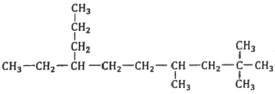
- 2,2,4-트리메틸-7-프로필노네인
(2,2,4-trimethyl-7-propylnonane) - 7-에틸-2,2,4-트리메틸데케인
(7-ethyl-2,2,4-trimethyldecane) - 3-프로필-6,8,8-트리메틸노네인
(3-propyl-6,8,8-trimethylnonane) - 4-에틸-7,9,9-트리메틸데케인
(4-ethyl-7,9,9-trmethyldecane)
(정답률: 59%)
5. 아크광원의 특성을 설명한 것 중 틀린 것은?
- 아크의 전류는 전자의 흐름과 열이온화로 인해 생성된 이온에 의해 운반된다.
- 아크 틈새에서 양이온들의 이동에 대한 저항 때문에 높은 온도가 발생한다.
- 아크 온도는 플라스마의 조성 즉 시료와 전극으로부터 원자 입자가 생성되는 속도에 따라 달라진다.
- 직류 아크 광원에서 얻은 스펙트럼은 원자들의 센 선이 많고 이온들의 수가 많은 스펙트럼을 생성한다.
(정답률: 47%)
6. 살충제인 DDT(C14H9Cl5)의 합성반응이 아래와 같다. 225g의 클로로벤젠(C6H5Cl)과 157.5g의 클로랄(C2HOCl3)을 반응시켜 DDT를 합성할 때에 대한 다음 설명 중 틀린 것은? (단, 클로로벤젠: 112.5g/mol, 클로랄: 147.5g/mol, DDT: 354.5g/mol이다.)
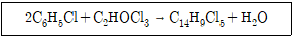
- 이 반응의 한계시약(limiting reagent)은 클로로벤젠이다.
- 반응기에 남은 물질의 총 질량은 372.5g이다.
- 반응이 완전히 진행될 경우, 반응기에 남은 시약은 클로랄 10g과 DDT 354.5g이다.
- DDT의 실제 수득량이 177.25g일 경우 수득률은 50%이다.
(정답률: 64%)
7. 입체이성질체의 분류에 속하는 것은?
- 배위권이성질체
- 기하이성질체
- 결합이성질체
- 구조이성질체
(정답률: 75%)
8. Co의 바닥상태 전자배치로 옳은 것은? (단, 코발트(Co)의 원자번호는 27이다.)
- 1s22s22p63s23p63d9
- 1s21p62s22p63s23p63d3
- 1s22s23s22p63p63d9
- 1s22s22p63s23p64s23d7
(정답률: 81%)
9. 레이저 발생과정에서 간섭성인 것은?
- 펌핑
- 흡수
- 자극방출
- 자발방출
(정답률: 48%)
10. N2O4 NO2의 평형식과 실험 데이터가 아래와 같다. 데이터를 바탕으로 추론한 평형상수와 가장 가까운 값은?
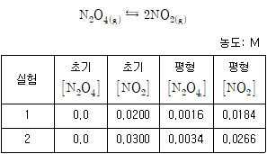
- 0.125
- 0.210
- 0.323
- 0.422
(정답률: 68%)
11. 다음 분자 중 cis와 trans 이성질체로 존재할 수 없는 것은?
- (CH3)2C=CH2
- (CH3)HC=C(CH3)H
- FHC=CFCl
- CH3CH2CH=CHCH3
(정답률: 73%)
12. 원자에 공통적으로 있는 입자이며 단위 음전하를 갖고 가장 가벼운 양성자 질량의 약 1/2000 정도로 매우 작은 질량을 갖는 것은?
- 중성자
- 미립자
- 전자
- 원자
(정답률: 84%)
13. 유기재료의 화학 특성을 분석하기 위한 분석기기로 거리가 먼 것은?
- HPLC(High Performance Liquid Chromatograph)
- LC/MS(Liquid Chromatograph/Mass Spectrometer)
- GC/MS(Gas Chromatograph/Mass Spectrometer)
- GF-AAS(Graphite Furnace - Atomic Absorption Spectrophotomter)
(정답률: 76%)
14. 27℃ 실험실에서 빈 게이뤼삭 비중병의 질량이 10.885g, 5mL 피펫으로 비중병에 물을 가득 채웠을 때 질량이 61.135g이었다면, 비중병에 담겨있는 물의 부피(mL)는? (단, 27°C에서 공기의 부력을 보정한 물 1g의 부피는 1.0046mL이다.)
- 49.791
- 50.020
- 50.481
- 50.250
(정답률: 71%)
15. 우라늄(U) 동위원소의 핵분열 반응이 아래와 같을 때, M에 해당되는 입자는?
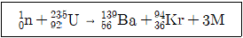
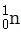
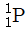
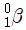
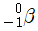
(정답률: 81%)
16. 다음과 같은 추출장치의 명칭은?
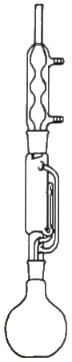
- 속슬렛 추출장치
- 진탕 추출장치
- 필터여과 추출장치
- 초임계유체 추출장치
(정답률: 65%)
17. 다이브로모벤젠의 구조이성질체의 숫자로 옳은 것은?
- 5
- 4
- 3
- 2
(정답률: 77%)
18. 광학기기의 구성이 각 분광법과 바르게 짝지어진 것은?
- 흡수분광법 : 시료 → 파장선택기 → 검출기 → 기록계 → 광원
- 형광분광법 : 광원 → 시료 → 파장선택기 → 검출기 → 기록계
- 인광분광법 : 광원 → 시료 → 파장선택기 → 검출기 → 기록계
- 화학발광법 : 광원과 시료 → 파장선택기 → 검출기 → 기록계
(정답률: 61%)
19. 카복시산과 알코올을 축합반응하여 생성하는 화합물 종류는?
- 알데하이드(aldehyde)
- 케톤(ketone)
- 에스터(ester)
- 아마이드(amide)
(정답률: 57%)
20. 탄소와 수소로만 이루어진 탄화수소 중 탄소의 질량 백분율이 85.6%인 화합물의 실험식은? (단, 원자량은 C: 12.01 amu, H: 1.008 amu이다.)
- CH
- CH2
- C7H7
- C7H14
(정답률: 76%)
2과목: 화학물질 특성분석
21. EDTA와 양이온이 결합하여 생성되는 화합물의 명칭은?
- 고분자
- 이온교환수지
- 킬레이트 착물
- 이온결합화합물
(정답률: 79%)
22. 흡광도가 0.0375인 용액의 %투광도는?
- 3.75
- 26.67
- 53.33
- 91.73
(정답률: 67%)
23. 25°C의 수용액에서 반응이 자발적으로 일어나는지의 예측결과로 옳은 것은? (단, 용해된 화학종들의 초기농도는 모두 1.0M이라고 가정한다.) (문제 오류로 가답안 발표시 1번이 답안으로 발표되었으나, 확정답안 발표시 1번, 2번이 정답 처리 되었습니다. 여기서는 가답안인 1번을 누르면 정답 처리 됩니다.)
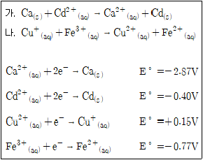
- 가: 자발적, 나: 자발적
- 가: 자발적, 나: 비자발적
- 가: 비자발적, 나: 자발적
- 가: 비자발적, 나: 비자발적
(정답률: 65%)
24. Cu(s) + 2Fe3+ ⇆ 2Fe2++Cu2+ 반응의 평형상수는?
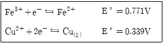
- 2.0 x 108
- 4.0 x 1014
- 4.0 x 1016
- 2.0 x 1040
(정답률: 57%)
25. 전극전위와 관련한 설명으로 옳지 않은 것은?
- 전극전위는 해당 전극을 오른쪽, 표준수소전극을 왼쪽 전극으로 구성한다.
- 오랫동안 공통의 기준전극으로 사용된 것은 기체 전극이다.
- 반쪽전지전위를 절대적인 값으로 측정할 수 있다.
- 표준전극전위는 반응물과 생성물의 활동도가 모두 1일 때의 전극 전위이다.
(정답률: 53%)
26. 0.⑤0 M K2CrO4용액의 Ag2CrO4 용해도(g/L)는? (단, Ag2CrO4의 Ksp = 1.1 x 10-12, 분자량은 331.73 g/mol이다.)
- 6.2 x 10-2
- 7.8 x 10-4
- 2.5 x 10-4
- 2.3 x 10-6
(정답률: 43%)
27. 산화납(PbO)의 환원반응으로 인한 납(Pb)의 산화수 변화를 옳게 나타낸 것은?
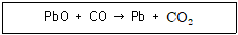
- +2 → -1
- +1 → 0
- +2 → 0
- -2 → 0
(정답률: 79%)
28. 착물형성에 관한 아래 설명의 빈 칸에 들어갈 내용을 바르게 짝지은 것은?
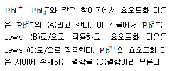
- A-리간드 B-산 C-염기 D-배위
- A-리간드 B-염기 C-산 D-공유
- A-매트릭스 B-산 C-염기 D-배위
- A-매트릭스 B-염기 C-산 D-공유
(정답률: 70%)
29. 금이 왕수에서 녹을 때 미량의 금이 산화제인 질산에 의해 이온이 되어 녹으면 염소 이온과 반응해서 제거되면서 계속 녹는다. 이때 금 이온과 염소 이온 사이의 반응은?
- 산화-환원 반응
- 침전 반응
- 산-염기 반응
- 착물형성 반응
(정답률: 61%)
30. 유기물의 질소 함량 결정을 위한 Kjeldahl 방법에 관한 설명 중 옳은 것을 모두 고른 것은?
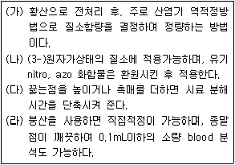
- (가)
- (나)
- (가)(나)(다)
- (가)(나)(다)(라)
(정답률: 55%)
31. 0.10M NaCl 용액에 PbI2가 용해되어 생성된 Pb2+농도(mg/L)는? (단, Pb2+의 질량은 207.0 g/mol, PbI2의 용해도곱상수는 7.9x10-9, 이온세기가 0.10M일 때 Pb2+과 I-의 활동도계수는 각각 0.36과 0.75이다.)
- 0.221
- 0.442
- 221
- 442
(정답률: 36%)
32. XRF의 특징에 대한 설명 중 틀린 것은?
- 비파괴 분석법이다.
- 다중원소의 분석이 가능하다.
- Auger 방출로 인 한 증강효과로 감도가 높다.
- 스펙트럼이 비교적 간단하여 스펙트럼선 방해가 적다.
(정답률: 57%)
33. pH 7.0인 암모니아 용액에서 주 화학종은?
- NH2-
- NH3
- NH4+
- NH3와 NH4+
(정답률: 49%)
34. 이온에 대한 설명 중 틀린 것은?
- 전기적으로 중성인 원자가 전자를 얻거나 잃어버리면 이온이 만들어진다.
- 원자가 전자를 잃어버리면 양이온을 형성한다.
- 원자가 전자를 받아들이면 음이온을 형성한다.
- 이온이 만들어질 때 핵의 양성자 수가 변해야 한다.
(정답률: 80%)
35. 완충용량(buffer capacity)에 대한 설명으로 옳은 것은?
- 완충용액 1.00L를 pH 1단위만큼 변화시킬 수 있는 센 산이나 센 염기의 몰수
- 완충용액의 구성 성분이 약한 산 1.00L의 pH를 1단위만큼 변화시킬 수 있는 짝염기의 몰수
- 완충용액 1.00L를 pH 1단위만큼 변화시킬 수 있는 약한 산 또는 그의 짝염기의 몰수
- 완충용액 중 짝염기에 대한 산의 농도비가 1이 되는데 필요한 약한 산의 몰수
(정답률: 55%)
36. pH=3.00이고 P(AsH3)=1.00mbar 일 때 아래의 반쪽전지전위(V)는?
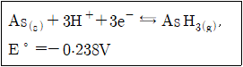
- -0.592
- -0.415
- -0.356
- -0.120
(정답률: 34%)
37. 원자흡수분광기의 불꽃 원자화기에 공급하는 공기-아세틸렌 가스를 아산화질소-아세틸렌 가스로 대체하는 주된 목적은?
- 불꽃의 온도를 올리기 위해서
- 불꽃의 온도를 내리기 위해서
- 가스 연료의 비용을 줄이기 위해서
- 시료의 분무 효율을 올리기 위해서
(정답률: 63%)
38. 슈크로오스(C12H22O11) 684g을 물에 녹여 전체 부피를 4.0L로 만들었을 때 몰농도는?
- 0.25
- 0.50
- 0.75
- 1.00
(정답률: 77%)
39. 산, 염기에 대한 설명으로 틀린 것은?
- Brɸnsted-Lowry산은 양성자 주개(donor)이다.
- 염기는 물에서 수산화 이온을 생성한다.
- 강산은 물에서 완전히 또는 거의 완전히 이온화되는 산이다.
- Lewis산은 비공유전자쌍을 줄 수 있는 물질이다.
(정답률: 70%)
40. CaCO3(s) ⇆ CaO(s) + CO2(g)반응에서 평형에 영향을 주는 인자만을 고른 것은?
- CaO의 농도, 반응온도
- CO2의 농도, 반응온도
- CO2의 압력, CaO의 농도
- CaCO3의 농도, CaO의 농도
(정답률: 56%)
3과목: 화학물질 구조분석
41. 질량분석법의 특징이 아닌 것은?
- 여러 원소에 대한 정보를 얻을 수 있다.
- 원자의 동위원소비에 대한 정보를 제공한다.
- 같은 분자식을 지닌 이성질체를 구별할 수 있다.
- 같은 분자량을 지닌 화합물은 분석할 수 없다.
(정답률: 51%)
42. 전해전지의 양극에서 산소, 음극에서 구리를 석출시키는 데에 0.600A의 일정한 전류가 흘렀다. 다른 산화환원 반응이 일어나지 않는다고 가정하고 15분간 전해하였을 때 전하량(C)는?
- 536
- 540
- 546
- 600
(정답률: 71%)
43. 열분석법 중 시료물질과 기준물질을 조절된 온도 프로그램으로 가열하면서 이 두 물질에 흘러 들어간 열량의 차이를 시료온도의 함수로 측정하여 근본적으로 에너지의 차이를 측정하는 분석법은?
- 열무게 분석법
- 시차 열분석법
- 시차 주사 열계량법
- 열기계 분석법
(정답률: 65%)
44. 동일한 조건하에서 액체크로마토그래피로 측정한 화합물 A, B, C의 머무름 시간 측정결과가 아래와 같을 때, 보기 중 틀린 것은? (단, C는 컬럼 충진물과의 상호작용이 전혀 없다고 가정한다.)
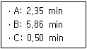
- A의 조정된 머무름 시간은 1.85min이다.
- B의 조정된 머무름 시간은 5.36min이다.
- B의 A에 대한 머무름비는 2.49이다.
- 머무름비는 상대 머무름 값이라고도 한다.
(정답률: 66%)
45. 1H Nuclear Magnetic Resonance(NMR)에서 유기 화합물 분석에 사용할 수 있는 가장 적당한 용매는?
- CDCl3
- CHCl3
- C6H6
- H3O+
(정답률: 57%)
46. 전위차법에서 S2-이온의 농도를 측정하기 위하여 주로 사용하는 지시전극은?
- 액체 막전극
- 결정성 막전극
- 1차 금속 지시 전극
- 3차 금속 지시 전극
(정답률: 50%)
47. 전자포획 검출기(ECD)에 대한 설명 중 틀린 것은?
- 살충제와 폴리클로로바이페닐 분석이 용이하다.
- 컬럼에서 용출된 시료가 방사성 방출기를 통과한다.
- 방출기에서 발생한 전자는 시료를 이온화하고 전자 다발을 만든다.
- 아민, 알코올, 탄화수소 화합물에는 감도가 낮다.
(정답률: 38%)
48. 적외선 흡수 분광계를 구성하는 장치가 아닌 것은?
- 이온원
- 적외선 광원
- 검출기
- 단색화 장치
(정답률: 51%)
49. 다음의 질량분석계 중 일반적으로 분해능이 가장 낮은 것은?
- 자기장 질량분석계
- 사중극자 질량분석계
- 이중 초점 질량분석계
- 비행시간 질량분석계
(정답률: 56%)
50. FeCl3ㆍ6H2O 25.0mg을 0℃부터 340℃까지 가열하였을 때 얻은 열분해곡선(Thermogram)을 예측하고자 한다. 100℃ 와 320℃에서 시료의 질량으로 가장 타당한 것은? (단, FeCl3의 열적 특성은 아래 표와 같다.)
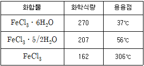
- 100°C - 9.8mg, 320℃ - 0.0mg
- 100℃ - 12.6mg, 320℃ - 0.0mg
- 100°C - 15.0mg, 320℃ - 15.0mg
- 100°C - 20.2mg, 320℃ - 20.2mg
(정답률: 60%)
51. 시차 열분석 (Differential Thermal Analysis; DTA)에서 흡열 쪽으로 뾰족한 피크를 보이는 것은?
- 산화점
- 녹는점
- 결정화점
- 유리전이온도
(정답률: 65%)
52. 기체 크로마토그래피/질량분석법(GC/MS)의 이동상으로 가장 적절한 것은?
- He
- N2
- Ar
- Kr
(정답률: 47%)
53. 크로마토그래피에서 띠 넓힘에 기여하는 요인에 대한 설명으로 틀린 것은?
- 세로확산은 이동상의 속도에 비례한다.
- 충전입자의 크기는 다중 경로 넓힘에 영향을 준다.
- 이동상에서의 확산 계수가 증가할수록 띠 넓힘이 증가한다.
- 충전입자의 크기는 질량 이동 계수에 영향을 미친다.
(정답률: 63%)
54. 순환전압전류법(Cyclic Voltammetry; CV)은 특정성분의 전기화학적인 특성을 조사하는데 기본적으로 사용된다. 순환전압전류법에 대한 설명으로 옳은 것은?
- 지지전해질의 농도는 측정시료의 농도와 비슷하게 맞추어 조절한다.
- 한 번의 실험에는 한 종류의 성분만을 측정한다.
- 전위를 한쪽 방향으로만 주사한다.
- 특정성분의 정량 및 정성이 가능하다.
(정답률: 54%)
55. 질량분석법에서 순수한 시료가 시료도입장치를 통해 이온화실로 도입되어 이온화된다. 분자를 기체상태 이온으로 만들 때 사용하는 장치가 아닌 것은?
- Electron Impact; EI
- Field Desorption; FD
- Chemical Ionization; CI
- Chemical Attraction force Ionization; CAI
(정답률: 38%)
56. 열무게분석기기(ThermoGravimetric Analysis; TGA)의 검출기로서 작용하는 장치는?
- Syringe
- Gas injector
- Weight scale
- Electric furnace
(정답률: 72%)
57. pH를 측정하는 데는 주로 유리전극이 사용된다. 유리전극 오차 원인으로 가장 거리가 면 것은?
- 산에 의한 오차
- 탈수에 의한 오차
- 압력에 의한 오차
- 알칼리에 의한 오차
(정답률: 69%)
58. 분산형 IR 분광 광도계의 특징으로 틀린 것은?
- 일반적으로 겹빛살(double beam)형을 사용한다.
- 높은 주파수의 토막내기(chopper)를 가진다.
- 복사선을 분산시키기 위하여 반사회절발(grating)을 사용한다.
- 광원의 낮은 세기 때문에 큰 신호 증폭이 필요하다.
(정답률: 42%)
59. 200nm 파장에서 1.00cm 셀을 사용하여 페놀 수용액을 측정할 때, 측정된 투광도가 10~70% 사이에 관측될 페놀의 농도(c; M) 범위로 옳은 것은? (단, 페놀 수용액의 200nm에서의 몰흡광계수는 5.17×103 Lcm-1mol-1이다.)
- 1.6×10-5＜c＜1.5×10-5
- 2.5×10-4＜c＜1.5×10-5
- 1.7×10-4＜c＜1.3×10-4
- 3.0×10-5＜c＜1.9×10-4
(정답률: 54%)
60. 유도결합플라스마 분광법에서 광원(들뜸 원)의 설명 중 맞는 것은?
- 유도코일에는 주로 2.45GHz 의 마이크로파를 사용한다.
- 탄소의 양극과 텅스텐 음극을 주로 사용한다.
- 주로 불활성 기체인 헬륨(He)을 사용한다.
- 이온화는 Tesla방전 코일에 의한 스파크로부터 시작된다.
(정답률: 47%)
4과목: 시험법 밸리데이션
61. 다음 중 Quality Assurance(QA)를 위한 specification에 포함되어야 할 사항을 모두 고른 것은?
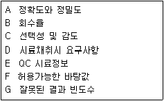
- A, B, C, D, E, F, G
- A, C, D, F, G
- A, B, D, F
- A, B, C, D
(정답률: 67%)
62. 검량곡선을 작성할 때에 대한 설명으로 옳은 내용을 모두 고른 것은?
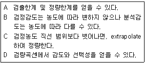
- A, B
- A, D
- A, B, C
- A, C, D
(정답률: 30%)
63. 다음에서 설명하는 화학 용어로 옳은 것은?
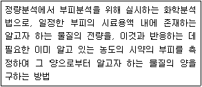
- 적정
- 증류
- 추출
- 크로마토그래피
(정답률: 76%)
64. 방법검출한계에 대한 설명으로 잘못된 것은?
- 일반적으로 중대한 변화가 발생하지 않아도 6개월 또는 1년마다 정기적으로 방법검출한계를 재산정한다.
- 예측된 방법검출한계의 3~5배의 농도를 포함하도록 7개의 매질첨가 시료를 준비ㆍ분석하여 표준편차를 구한 후, 표준편차의 10배의 값으로 산정한다.
- 방법검출한계는 시험방법, 장비에 따라 달라지므로 실험실에서 새로운 기기를 도입하게나 새로운 분석방법을 채택하는 경우 반드시 그 값을 다시 산정한다.
- 어떤 측정항목이 포함된 시료를 시험방법에 의해 분석한 결과가 99% 신뢰수준에서 0보다 분명히 큰 최소농도로 정의할 수 있다.
(정답률: 60%)
65. 바탕시료와 관련이 없는 것은?
- 오염여부의 확인
- 반드시 정제수를 사용
- 분석의 이상 유무 확인
- 측정항목이 포함되지 않은 시료
(정답률: 64%)
66. 검량선(calibration curve) 작성에 사용한 데이터의 개수를 2배로 늘리면 검량선의 기울기와 y절편의 표준 불확정도 변화비는?
- 22
- 21/2
- 2-1
- 2-1/2
(정답률: 50%)
67. 시스템 적합성 평가를 진행한 결과와 허용범위가 아래와 같을 때, 다음 설명 중 틀린 것은?
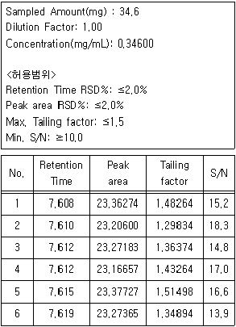
- Retention time은 합격이다.
- Tailing factor는 합격이다.
- Peak area는 합격이다.
- S/N는 합격이다.
(정답률: 61%)
68. 20% Pt 입자와 80% C 입자의 혼합물에서 임의의 103개 입자를 취했을 때, 예상되는 Pt 입자수와 표준편차는?
- 입자수 : 200, 표준편차 : 9.9
- 입자수 : 200, 표준편차 : 12.6
- 입자수 : 800, 표준편차 : 11.2
- 입자수 : 800, 표준편차 : 19.8
(정답률: 58%)
69. 정밀도와 정확도를 표현하는 방법이 바르게 짝지어진 것은?
- 정밀도 : 중앙값, 정확도 : 회수율
- 정밀도 : 중앙값, 정확도 : 변동계수
- 정밀도 : 상대표준편차, 정확도 : 변동계수
- 정밀도 : 상대표준편차, 정확도 : 회수율
(정답률: 61%)
70. 카페인 시료의 농도를 분광광도법으로 분석하여 아래의 표와 같은 데이터를 얻었을 때, 이 분광광도계의 최소 검출 가능 농도(mM)는?
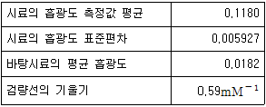
- 0.0332
- 0.0409
- 0.0697
- 0.1180
(정답률: 37%)
71. 다음 중 분석 장비의 소모품이 아닌 것은?
- 원자흡광광도계(AAS)에서 음극 램프(cathode lamp)
- HPLC-UV/Vis의 검출기에서 중수소 램프(deuterium lamp)
- 기체 크로마토그래프(GC)에서 시료 주입기(auto sampler)
- 분광광도계에서 시료 용액을 담는 셀(cell)
(정답률: 58%)
72. 내부표준에 관한 다음 설명 중 옳은 내용을 모두 고른 것은?
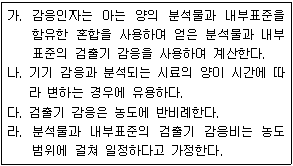
- 다
- 가, 나
- 가, 나, 라
- 옳은 설명이 없다.
(정답률: 45%)
73. 분석장비의 노이즈 발생에 대한 아래 설명 중 옳은 내용을 모두 고른 것은?
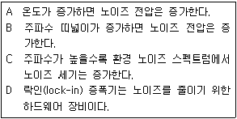
- A, B, C
- A, B, D
- A, C, D
- B, C, D
(정답률: 41%)
74. HPLC의 밸리데이션을 위해 실험한 결과가 아래와 같을 때, 옳게 해석한 것은?
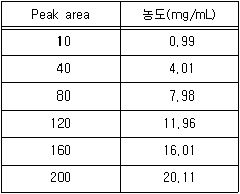
- HPLC의 직선성이 확보되지 않았으므로 재교정이 필요하다.
- 상관계수가 0.97인 직선식을 도출할 수 있다.
- 측정한 데이터를 바탕으로 220 peak area의 농도를 내삽하여 활용할 수 있다.
- peak area가 100일 때의 농도는 10.01mg/mL이다.
(정답률: 47%)
75. 유효숫자를 고려하여 아래를 계산할 때, 얻어지는 값은?
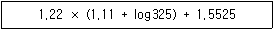
- 6.0
- 5.97
- 5.971
- 5.9712
(정답률: 69%)
76. 일반적으로 정밀도를 나타내는 2가지의 척도로 사용되는 것으로 옳게 짝지은 것은?
- 정확성-직선성
- 직선성-재현성
- 재현성-반복성
- 반복성-정확성
(정답률: 63%)
77. 다음 중 시험법 밸리데이션에 대한 설명으로 옳지 않은 것은?
- 시험법 밸리데이션의 목적은 시험법이 사용목적에 맞게 정확하고 신뢰성 및 타당성이 있는지를 증명하는 문서화 과정이다.
- 시험 목적에 맞게 적합한 밸리데이션 절차를 선택할 수 있으며 과학적 근거와 타당성이 있는 결과해석이 필요하다.
- 밸리데이션의 대상이 되는 모든 시험법은 모두 동일한 밸리데이션 항목으로 평가되어져야 한다.
- 밸리데이션 대상 시험방법으로는 확인시험, 불순물의 정량 및 한도시험, 특정성분의 정량시험이 있다.
(정답률: 74%)
78. 분석 방법이 의도한 목적에 허용되는지 증명하는 검증 방법에서 사용하는 용어에 대한 설명으로 옳지 않은 것은?
- 특이성이란 분석물질을 다른 것과 구별하는 능력이다.
- 직선성은 보통 규정 곡선의 상관 계수의 제곱으로 측정된다.
- 정밀도의 종류에는 병행정밀도, 실험실내 정밀도, 실험실간 정밀도가 있다.
- 범위는 직선성, 정확도, 정밀도가 받아들일 수 있는 오차구간이다.
(정답률: 42%)
79. 분석장비의 검ㆍ교정 절차서를 작성하는 방법으로 적합하지 않은 것은?
- 시험 방법에 따라 최적범위 안에서 교정용 표준물질과 바탕시료를 사용해서 교정곡선을 그린다.
- 계산된 표준편차로 교정곡선에 대한 허용여부를 결정한다.
- 검정곡선을 검증하기 위해서 교정검증표준물질(CVS)을 사용하여 교정한다.
- 연속교정표준물질(CCS)과 교정검증표준물질(CVS)이 허용범위에 들지 못했을 경우, 초기 교정을 다시 실시한다.
(정답률: 34%)
80. 식품의약품안전처 지침 시험장비 밸리데이션 표준수행절차(SOP)의 "시험ㆍ교정(TC)" 서식에 포함되지 않는 항목은?
- 밸리데이션 수행자
- 성적서 발급일/확인일
- 장비 제조사/제조국
- 수행기관·업체 주소
(정답률: 46%)
5과목: 환경·안전관리
81. 폐기물관리법령상 지정폐기물이 아닌 것은? (문제 오류로 가답안 발표시 2번이 답안으로 발표되었으나, 확정답안 발표시 전항 정답 처리 되었습니다. 여기서는 가답안인 2번을 누르면 정답 처리 됩니다.)
- 폐유
- 폐백신
- 폐농약
- 폐합성 수지
(정답률: 78%)
82. 석유화학공장에서 측정한 공기 중 톨루엔의 농도가 아래와 같을 때, 톨루엔에 대한 이 공장 근로자의 시간가중평균노출량(TWA;ppm)은?
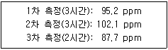
- 91.4
- 93.1
- 95.9
- 97.2
(정답률: 70%)
83. 연소의 3요소를 참고하여 소화의 종류별 소화원리에 대한 설명의 ( )안에 알맞은 용어가 순서대로 옳게 나열된 것은?
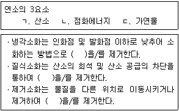
- ㄱ, ㄱ, ㄴ
- ㄴ, ㄱ, ㄷ
- ㄴ, ㄴ, ㄷ
- ㄱ, ㄱ, ㄷ
(정답률: 76%)
84. 위험성 평가 절차가 아래의 도표와 같을 때, 4M 위험성 평가를 적용시키는 단계는?
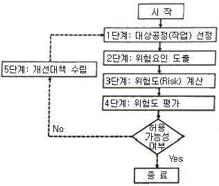
- 1단계
- 2단계
- 3단계
- 4단계
(정답률: 55%)
85. 산업안전보건법령상 관리대상 유해물질 중 상온(15℃)에서 기체상인 물질은?
- Formic acid
- Nitroglycerin
- Methyl amine
- N,N-Dimethylaniline
(정답률: 45%)
86. 응급처치 시 주의사항 중 가장 적절하지 않은 것은? (단, 과학기술인력개발원의 연구실 안전 표준 교재를 기준으로 한다.)
- 무의식 환자에게 음식(물 포함)을 주어서는 안 된다.
- 응급처치 후 반드시 의료인에게 인계해 전문적 진료를 받도록 한다.
- 아무리 긴급한 상황이라도 처치하는 자신의 안전과 현장 상황의 안전을 확보해야 한다.
- 의료인의 지시를 받기 전에 의약품을 사용할 시 환자의 동의를 구하고 사용한다.
(정답률: 75%)
87. 우라늄-233이 알파 입자와 감마선을 내놓으며 붕괴되는 핵화학 반응에서 생성되는 물질은?
- 토륨(원자번호 90, 질량수 229)
- 라듐(원자번호 88, 질량수 228)
- 납(원자번호 82, 질량수 2⑤)
- 악티늄(원자번호 89, 질량수 228)
(정답률: 52%)
88. 연구실 대상 소방안전관리에 관한 특별조사(소방특별조사) 시 소방특별조사를 연기할 수 있는 사유가 아닌 것은?
- 안전관리우수연구실 인증기간과 일정이 겹칠 경우
- 태풍, 홍수 둥 재난이 발생하여 소방대상물을 관리하기가 매우 어려운 경우
- 관계인이 질병, 장기출장 등으로 소방특별조사에 참여할 수 없는 경우
- 권한 있는 기관에 자체점검기록부 등 소방특별조사에 필요한 장부ㆍ서류 등이 압수되거나 영치되어있는 경우
(정답률: 62%)
89. 알코올은 화학 실험실에서 빈번하게 사용되는 물질이지만, 메탄올과 같이 인체에 매우 유해한 종류도 있으므로 주의가 필요하다. 다음 중 알코올의 화학 반응과 관련하여 잘못 설명한 것은?
- 치환반응을 통해 알코올의 작용기인 히드록실기가 브롬으로 치환될 수 있다.
- 황산 분위기에서 탈수 반응에 의해 에탄올을 반응시켜 에틸렌을 생성할 수 있다.
- 황산 분위기에서 프로판올과 아세트산을 반응시켜 아세트산 프로필을 생성할 수 있다.
- 환원 반응을 통해 에탄올을 아세트산으로 만들 수 있다.
(정답률: 57%)
90. 산업안전보건법령상 유해화학물질의 물리적 위험성에 따른 구분과 정의에 관한 설명으로 틀린 것은?
- 인화성 가스란 20℃의 온도 및 표준압력 101.3kPa에서 공기와 혼합하여 인화범위에 있는 가스를 말한다.
- 인화성 고체란 쉽게 연소되는 고체나 마찰에 의해 화재를 일으키거나 화재를 돕는 고체를 말한다.
- 고압가스란 200kPa 이상의 게이지 압력 상태로 용기에 충전되어 있는 가스 또는 액화되거나 냉동액화된 가스를 말한다.
- 자연 발화성 액체란 적은 양으로도 공기와 접촉하여 3분 안에 발화할 수 있는 액체를 말한다.
(정답률: 59%)
91. 연구실안전법령상 안전점검 또는 정밀안전진단 대행기관의 기술인력이 받아야 하는 교육과 교육 시기·주기 및 시간이 옳게 짝지어진 것은?
- 신규교육: 기술인력 등록 후 3개월 이내, 12시간
- 신규교육: 기술인력 등록 후 6개월 이내, 18시간
- 보수교육: 신규교육 이수 후 매 1년이 되는 날 기준 전후 3개월, 12시간
- 보수교육: 신규교육 이수 후 매 1년이 되는 날 기준 전후 6개월, 18시간
(정답률: 55%)
92. 시료의 오염을 최소화하기 위한 시료채취 프로그램에 포함되어야 할 내용으로 가장 거리가 먼 것은?
- 시료 구분
- 시료 수집자
- 시료채취 방법
- 시료 보존 방법
(정답률: 42%)
93. 위험물안전관리법령상 제2류 위험물인 철분에 대한 상세 설명 중 A와 B에 들어갈 숫자는?
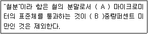
- A: 53. B: 50
- A: 150, B: 50
- A: 53, B: 40
- A: 150, B: 40
(정답률: 57%)
94. 위험물안전관리법령상 위험물의 성질과 각 성질에 해당하는 위험물질의 연결이 틀린 것은?
- 가연성, 고체 - 황린, 적린
- 산화성 고체 - 염소산나트륨, 질산칼륨
- 인화성 액체 - 이황화탄소, 메틸알코올
- 자연발화성 및 금수성 물질 - 나트륨, 칼륨
(정답률: 55%)
95. 산업안전보건법령상 물질안전보건자료 작성 시 포함되어야할 항목이 아닌 것은?
- 재활용방안
- 응급조치요령
- 운송에 필요한 정보
- 구성성분의 명칭 및 함유량
(정답률: 74%)
96. 산업안전보건법령상 물질안전보건자료(MSDS) 대상물질을 양도ㆍ제공하는 자가 이행해야할 경고표지의 부착에 관한 내용 중 틀린 것은?
- 용기 및 포장에 경고표지를 부착할 수 없을 경우 경고표시를 인쇄한 꼬리표로 대체할 수 있다.
- UN의 위험물 운송에 관한 권고(RTDG)에 따라 드럼 등의 용기에 경고표시 할 경우 그림문자를 누락하여서는 안된다.
- 제공받은 위험물에 경고표지가 부착되어있지 않을 경우 물질의 양도ㆍ제공자에게 경고표지의 부착을 요청할 수 있다.
- 실험실에서 시험ㆍ연구목적으로 사용하는 시약은 외국어로 작성된 경고표지만 부착하여도 무방하다.
(정답률: 39%)
97. 화학반응에 의해서 발생하는 열이 아닌 것은?
- 반응열
- 연소열
- 용융열
- 압축열
(정답률: 73%)
98. 산업안전보건법령상 물질안전보건자료의 작성에 관한 내용의 일부 중 밑줄 친 것에 해당하지 않는 것은? (단, 법령상 향수등에 해당하는 물질에 관한 조건은 제외한다.)
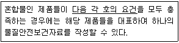
- 각 구성성분의 함량변화가 10%P 이하일 것
- 혼합물로 된 제품의 구성성분이 같을 것
- 주성분이 90% 이상일 것
- 유사한 유해성을 가질 것
(정답률: 41%)
99. 화학물질관리법령상 유해화학물질관리자의 직무범위에 해당하지 않는 것은?
- 유해화학물질 취급기준 준수에 필요한 조치
- 취급자의 개인보호장구 착용에 필요한 조치
- 사고대비물질의 관리기준 준수에 필요한 조치
- 취급자의 건강진단 등 건강관리에 필요한 조치
(정답률: 75%)
100. 폐기물관리법령상 폐기물처리시설의 개선기간 등에 관한 아래의 내용 중 ( )안에 들어갈 기간은?
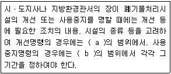
- a: 6개월, b: 1년
- a: 1년, b: 6개월
- a: 3개월, b: 6개월
- a: 6개월, b: 3개월
(정답률: 43%)
Na의 몰 비율 = (29.1 g / 23.0 g/mol) = 1.2652 mol
S의 몰 비율 = (40.5 g / 32.06 g/mol) = 1.2625 mol
O의 몰 비율 = (30.4 g / 16.0 g/mol) = 1.9 mol
이제 각 원소의 몰 비율을 가장 작은 정수 비율로 나눠준다.
Na의 비율 = 1.2652 / 1.2625 = 1.0021 ≈ 1
S의 비율 = 1.2625 / 1.2625 = 1
O의 비율 = 1.9 / 1.2625 = 1.5047 ≈ 1.5
따라서, 화합물의 실험식은 NaSO1.5이다. 이를 가장 간단한 정수 비율로 나타내면 Na2S2O3이 된다.
따라서, 정답은 "Na2S2O3"이다.